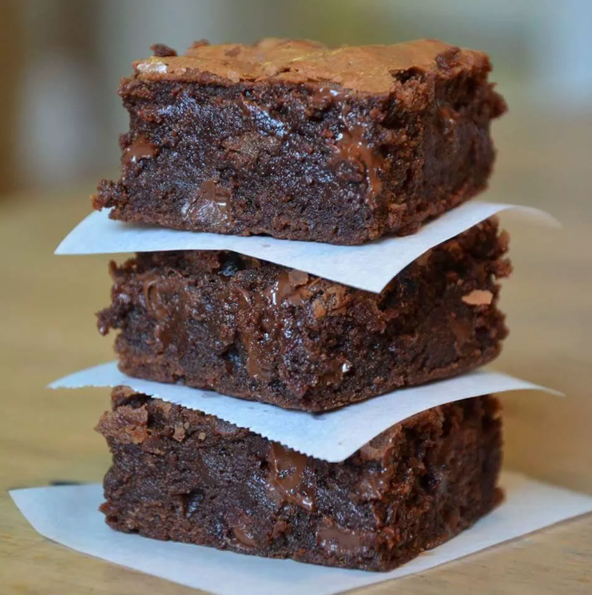

Brownies Recipe

Description
Bake these easy brownies whenever you need to quickly satisfy your sweet tooth. Made with kitchen staples, you'll come back to this easy brownie recipe again and again.
Ingredients
- 2 cups white sugar
- 1 ½ cups all-purpose flour
- 1 cup butter, melted
- 4 eggs
- ½ cup cocoa powder
- 1 teaspoon vanilla extract
- ½ teaspoon baking powder
- ½ teaspoon salt
- ½ cup walnut halves
Steps
- Preheat the oven to 350 degrees F (175 degrees C). Grease a 9x13-inch pan
- Mix sugar, flour, melted butter, eggs, cocoa powder, vanilla, baking powder, and salt in a large bowl until combined. Spread the batter into the prepared pan. Decorate with walnut halves.
- Bake in the preheated oven until top is dry and edges have started to pull away from the sides of the pan, about 20 to 30 minutes; cool before slicing into squares.
Go back